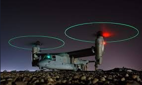

<section id="hardware_project" class="section min-h-screen py-12">
    <div class="max-w-4xl mx-auto">
        <h2 class="text-3xl font-bold text-blue-600 mb-6 relative inline-block">
            Hardware Projects
            <span class="absolute bottom-0 left-0 w-1/2 h-1 bg-blue-200"></span>
        </h2>
        
        <div class="grid grid-cols-1 md:grid-cols-2 gap-6">
            <div class="hardware-card bg-white rounded-xl shadow-md overflow-hidden card">
                
                <div class="p-6">
                    <h3 class="text-xl font-semibold text-gray-800 mb-2">StealthLink</h3>
                    <p class="text-gray-600 mb-4">Developing a secure Mobile-to-LoRa communication system for military use, enabling encrypted text, alerts, and GPS sharing without SIM cards or Wi-Fi.
                        Focused on building resilient, offline communication for jamming-prone and network-denied environments using ESP32-LoRa modules.</p>
                    <!-- <a href="#" class="text-blue-600 hover:underline">Learn More</a> -->
                </div>
            </div>
            <div class="hardware-card bg-white rounded-xl shadow-md overflow-hidden card">
                
                <div class="p-6">
                    <h3 class="text-xl font-semibold text-gray-800 mb-2">Radar Signal Processor</h3>
                    <p class="text-gray-600 mb-4">
                        DX Mark 1 is a high-speed, dual-motor drone inspired by the V-22 Osprey, designed for ISR (Intelligence, Surveillance, and Reconnaissance) and search & rescue missions. Currently in the design phase, DX Mark 1 was selected as a finalist at national hackathons organized by IIT Hyderabad and NISER, showcasing its innovative "evade mode" and tactical capabilities.
                        <!-- <a href="#" class="text-blue-600 hover:underline">Learn More</a> -->
                </div>
            </div>
        </div>
    </div>
</section>